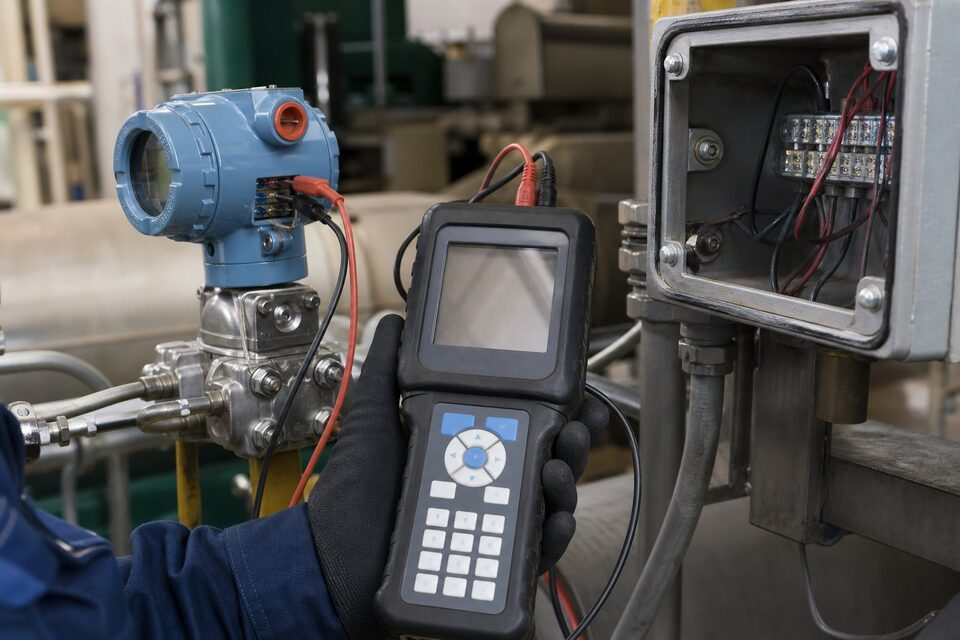

(HART) چه مسئلهای را حل کرد؟
وقتی تجهیزات ابزار دقیق هوشمند شدند، صنعت با یک سوال مواجه بود: چگونه از این هوش استفاده کنیم بدون اینکه میلیونها متر سیمکشی آنالوگ موجود را دور بریزیم؟ پاسخ، پروتکل (HART) بود: یک سیگنال دیجیتال فرکانسی که روی همان دو سیم سیگنال آنالوگ سوار میشود، بدون اینکه خوانش چهار تا بیست میلیآمپر را مختل کند. نتیجه، دسترسی به پیکربندی، عیبیابی و اطلاعات تشخیصی تجهیز، با حفظ کامل زیرساخت قدیمی بود؛ ترکیبی که (HART) را به پرکاربردترین پروتکل ابزار دقیق جهان تبدیل کرد.

ساختار ارتباط و نسخهها
در این پروتکل، یک تجهیز اصلی (معمولاً سیستم کنترل یا دستگاه پیکربندی) با تجهیز میدانی صحبت میکند. نسخههای مختلف پروتکل در طول زمان معرفی شدهاند که قابلیتهایی مانند سرعت بالاتر، پیامهای تشخیصی غنیتر و پشتیبانی از وضعیتهای پیشرفته را اضافه کردهاند؛ اما اصل سازگاری عقبگرد حفظ شده تا تجهیزات قدیمی و جدید در یک لوپ قابل استفاده باشند. درک نسخه پشتیبانیشده توسط تجهیز و سیستم میزبان، هنگام یکپارچهسازی اهمیت دارد.
پیکربندی و ابزارها
برای پیکربندی یک تجهیز (HART)، سه راه وجود دارد: دستگاه پیکربندی دستی برای کار میدانی سریع، نرمافزار مهندسی با مودم رابط برای مستندسازی کامل و سیستمهای میزبان با کارتهای ارتباطی برای پیکربندی از اتاق کنترل. با این ابزارها میتوان رنج، میرایی، نام تگ و دهها پارامتر دیگر را خواند و تغییر داد، تستهای داخلی تجهیز را اجرا کرد و اطلاعات تشخیصی را دریافت کرد. بهترین رویه، ذخیره نسخه پشتیبان از پیکربندی هر تجهیز پس از راهاندازی است تا در تعویض یا خرابی، بازیابی سریع ممکن باشد.
مولتیدراپ و نکات سیمکشی
در حالت مولتیدراپ، چند تجهیز روی یک جفت سیم و با آدرسهای دیجیتال متفاوت قرار میگیرند؛ این حالت زمانی کاربرد دارد که فقط خواندن اطلاعات مهم است و سیگنال آنالوگ جداگانه لازم نیست. مقاومت کل لوپ، نوع کابل و فاصلهها باید با الزامات پروتکل هماهنگ باشد؛ مقاومت خیلی بالا یا نویز زیاد، ارتباط را ناپایدار میکند. در محیطهای صنعتی، استفاده از کابل زوجبههمتابیده و رعایت فاصله از کابلهای قدرت، کیفیت ارتباط را تضمین مینماید.
عیبیابی ارتباط هارت در میدان
ارتباط هارت ذاتا پایدار است اما در میدان، چند مشکل رایج وجود دارد که بیشتر آنها به سیمکشی و شرایط حلقه برمیگردد تا خود دستگاهها. شناخت این الگوها، عیبیابی را از ساعتها آزمون و خطا به چند دقیقه کنترل هدفمند تبدیل میکند. اولین مشکل رایج، نبود یا ناکافی بودن مقاومت حلقه است؛ ارتباط هارت برای شکلگیری سیگنال دیجیتال به حداقل مقاومت مشخصی در مسیر نیاز دارد و در حلقههایی که مقاومت کل کمتر از حد لازم است، مودم نمیتواند ارتباط برقرار کند. اگر دستگاه آنالوگ درست کار میکند اما ارتباط دیجیتال برقرار نمیشود، مقاومت حلقه اولین چیز برای کنترل است. دوم، نویز و تداخل است؛ عبور کابل سیگنال در کنار کابلهای قدرت، استفاده از کابل بدون شیلد مناسب یا منابع سوئیچینگ در نزدیکی، میتواند نرخ خطا را بالا و ارتباط را ناپایدار کند. سوم، خازنهای نویزگیر و فیلترها هستند؛ برخی فیلترهای نصبشده برای حذف نویز آنالوگ، سیگنال دیجیتال هارت را نیز تضعیف میکنند و باید در نقاطی که ارتباط دیجیتال نیاز است، حضور آنها بازنگری شود. چهارم، محدودیت طول و سطح مقطع کابل است؛ کابلهای با مقاومت بالا یا طول زیاد، دامنه سیگنال را کاهش میدهند و در حلقههای طولانی باید مشخصات کابل کنترل شود. پنجم، مساله منابع تغذیه نامناسب است؛ ریپل بالای منبع تغذیه میتواند سیگنال ارتباطی را مختل کند و پایداری تغذیه باید با ابزار مناسب اندازهگیری شود. در عیبیابی عملی، از روش حذف مرحلهای استفاده کنید: ابتدا ارتباط را در نزدیکی دستگاه با حداقل طول کابل تست کنید، سپس طول واقعی را اضافه نمایید تا مشخص شود مشکل از دستگاه است یا مسیر. در نهایت، مستندسازی را فراموش نکنید؛ آدرس هر دستگاه، پارامترهای پیکربندی و وضعیت سیمکشی باید در برگه مشخصات نقطه ثبت باشد تا نفر بعدی نیازی به کشف دوباره نداشته باشد.
جمعبندی
پروتکل (HART) پلی بین دنیای آنالوگ و دیجیتال است: بدون تغییر سیمکشی، پیکربندی و تشخیص تجهیزات را ممکن میسازد. با شناخت نسخهها، ابزارهای پیکربندی و نکات سیمکشی، میتوان از این پروتکل برای راهاندازی سریعتر، عیبیابی آسانتر و مستندسازی بهتر حلقههای ابزار دقیق استفاده کرد.
سوالات رایج
پروتکل (HART) چیست؟
استانداردی که یک سیگنال دیجیتال را روی همان سیمهای سیگنال آنالوگ چهار تا بیست میلیآمپر سوار میکند؛ بنابراین هم خوانش آنالوگ حفظ میشود و هم پیکربندی و اطلاعات تشخیصی دیجیتال در دسترس قرار میگیرد.
چرا با وجود پروتکلهای تمام دیجیتال هنوز استفاده میشود؟
چون با سیمکشی و سیستمهای قدیمی سازگار است و ارتقا به تجهیزات هوشمند را بدون تغییر زیرساخت ممکن میسازد؛ میلیونها تجهیز نصبشده در جهان از این پروتکل استفاده میکنند.
مولتیدراپ چیست؟
حالتی که چند تجهیز روی یک جفت سیم با آدرسهای دیجیتال متفاوت قرار میگیرند؛ در این حالت سیگنال آنالوگ معمولاً حذف و فقط ارتباط دیجیتال استفاده میشود.
برای پیکربندی به چه ابزاری نیاز است؟
به یک دستگاه پیکربندی دستی یا نرمافزار مهندسی همراه با مودم رابط؛ این ابزارها پارامترهای تجهیز را خوانده و تغییر میدهند و برای مستندسازی نیز استفاده میشوند.
مطالب مرتبط
ترانسمیترها و ابزارهای پیکربندی با پشتیبانی پروتکل (HART) از برندهای معتبر عرضه میشوند.
مشاهده صفحه محصول ← ثبت RFQ همین محصولتامین این تجهیزات را به پیشرو تجهیز فرتاک بسپارید
شرکت پیشرو تجهیز فرتاک تامینکننده تخصصی تجهیزات صنعتی برای پروژههای نفت، گاز، پتروشیمی، فولاد و نیروگاهی است. برای دریافت پیشنهاد فنی و قیمت، استعلام (RFQ) خود را ثبت کنید تا کارشناسان مهندسی فروش در کوتاهترین زمان پاسخ دهند.
- تامین ابزار دقیقترانسمیترها و آنالایزرهای برندهای معتبر
- تامین تجهیزات صنایع نفت و گازپکیج مواد مطابق وندورلیست